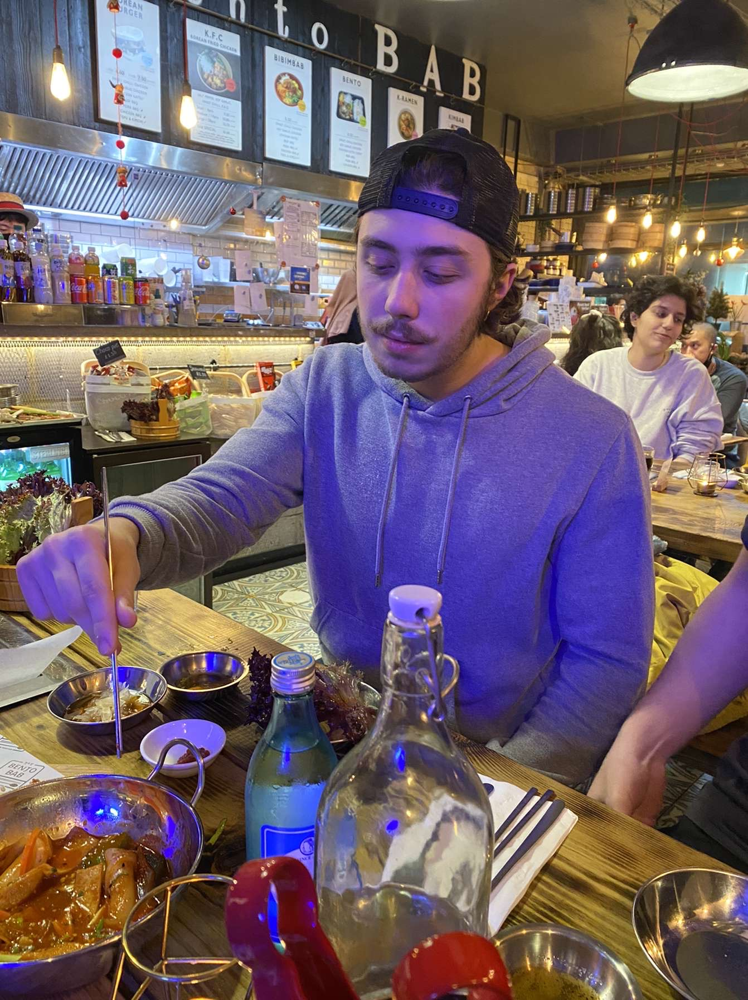

About Me
|
|

|
Hi there! My name is Eryk and I'm a third-year student at the University of Hull studying computer science. I have a strong passion for programming and have spent countless hours perfecting my craft. My primary focus is on developing innovative and efficient solutions to complex problems using a range of programming languages, including Python, Java, and C++.
Throughout my academic career, I've gained a wide range of skills that allow me to design, implement and debug programs. I've worked on several group projects where I've collaborated with other programmers to develop software that meets the client's requirements. My ability to work as part of a team is one of my strongest attributes, and I enjoy the challenge of working with others to find solutions to complex problems.
In my free time, I enjoy exploring new technologies and experimenting with different programming languages. I'm always looking to improve my skills and learn new things. I believe that staying up-to-date with the latest trends and technologies is essential in the fast-paced world of programming.
I'm excited to continue my journey as a programmer and look forward to contributing to the industry in the years to come. Thank you for taking the time to read my portfolio and get to know me a little better!
|
|